|
Structure and Interpretation of Computer Programs, Second Edition
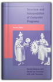
Harold Abelson, Gerald Jay Sussman, Julie Sussman
With an analytical and rigorous approach to problem solving and programming techniques, this book is oriented toward engineering. Structure and Interpretation of Computer Programs emphasizes the central role played by different approaches to dealing with time in computational models. Its unique approach makes it appropriate for an introduction to computer science courses, as well as programming languages and program design.
Compilers: Principles, Techniques, and Tools
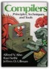
Alfred V. Aho, Ravi Sethi, Jeffrey D. Ullman
This introduction to compilers is the direct descendant of the well-known book by Aho and Ullman, Principles of Compiler Design. The authors present updated coverage of compilers based on research and techniques that have been developed in the field over the past few years. The book provides a thorough introduction to compiler design and covers topics such as context-free grammars, fine state machines, and syntax-directed translation. 0201100886B04062001
Organic Chemistry of Enzyme-Catalyzed Reactions, Revised Edition, Second Edition
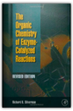
Richard B. Silverman Ph.D Organic Chemistry
The Organic Chemistry of Enzyme-Catalyzed Reactions is not a book on enzymes, but rather a book on the general mechanisms involved in chemical reactions involving enzymes. An enzyme is a protein molecule in a plant or animal that causes specific reactions without itself being permanently altered or destroyed.This is a revised edition of a very successful book, which appeals to both academic and industrial markets. Illustrates the organic mechanism associated with each enzyme-catalyzed reaction Makes the connection between organic reaction mechanisms and enzyme mechanisms Compiles the latest information about molecular mechanisms of enzyme reactions Accompanied by clearly drawn structures, schemes, and figures Includes an extensive bibliography on enzyme mechanisms covering the last 30 years Explains how enzymes can accelerate the rates of chemical reactions with high specificity Provides approaches to the design of inhibitors of enzyme-catalyzed reactions Categorizes the cofactors that are appropriate for catalyzing different classes of reactions Shows how chemical enzyme models are used for mechanistic studies Describes catalytic antibody design and mechanism Includes problem sets and solutions for each chapter Written in an informal and didactic style The Schemers Guide
Immunology, Fifth Edition

Advanced Engineering Mathematics
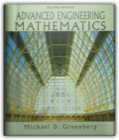
Michael Greenberg
This clear, pedagogically rich book develops a strong understanding of the mathematical principles and practices that today's engineers need to know. Equally as effective as either a textbook or reference manual, it approaches mathematical concepts from an engineering perspective, making physical applications more vivid and substantial. Its comprehensive instructional framework supports a conversational, down-to-earth narrative style, offering easy accessibility and frequent opportunities for application and reinforcement.
Semantics of Programming Languages: Structures and Techniques

Principles of Physical Biochemistry
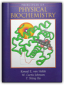
Kensal E van Holde, Curtis Johnson, Pui Shing Ho
This book offers the most up-to-date look at the theory and techniques used in the study of the physical chemistry of biological and biochemical molecules. Ken van Holde is one of the leading experts in biophysical chemistry and a well-known author (he is coauthor of an introductory biochemistry book). Comprehensive coverage of all physical techniques currently used by practicing biochemists, including. Up-to-date treatment of NMR and X-ray diffraction. Comprehensive coverage of other types of spectroscopy.
Principles of Neural Science
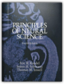
Eric Kandel, James Schwartz, Thomas Jessell
A Doody's Core Title for 2011!5 STAR DOODY'S REVIEW! "This is a simply wonderful book that makes accessible in one place all the details of how the neuron and brain work. The writing is clear. The drawings are elegant and educational. The book is a feast for both the eye and mind. The richness, the beauty, and the complexity of neuroscience is all captured in this superb book."—Doody's Review Service Now in resplendent color, the new edition continues to define the latest in the scientific understanding of the brain, the nervous system, and human behavior. Each chapter is thoroughly revised and includes the impact of molecular biology in the mechanisms underlying developmental processes and in the pathogenesis of disease. Important features to this edition include a new chapter - Genes and Behavior; a complete updating of development of the nervous system; the genetic basis of neurological and psychiatric disease; cognitive neuroscience of perception, planning, action, motivation and memory; ion channel mechanisms; and much more. Object-Oriented Programming in COMMON LISP: A Programmer's Guide to CLOS

The Practice of Programming
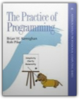
Brian W. Kernighan, Rob Pike
Provides advice, real-world examples in C, C++, Java, and a variety of special purpose languages. Includes debugging, testing, performance, portability, design, interfaces, style, and notation. Softcover. DLC: Computer programming.
Principles of Biochemistry
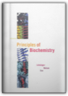
Albert L. Lehninger, David L. Nelson, Michael M. Cox
Great Biochemistry text used in Medical School courses.
Biological Physics: Energy, Information, Life
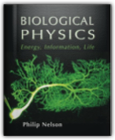
Philip Nelson
Physics and engineering departments are building research programs in biological physics, but until now there has not been a synthesis of this dynamic field at the undergraduate level. Biological Physics focuses on new results in molecular motors, self-assembly, and single-molecule manipulation that have revolutionized the field in recent years, and integrates these topics with classical results. The text also provides foundational material for the emerging field of nanotechnology. The text is built around a self-contained core geared toward undergraduate students who have had one year of calculus-based physics. Additional "Track-2" sections contain more advanced material for senior physics majors and graduate students.
The Handbook of Programming Languages (HPL): Imperative Programming Languages
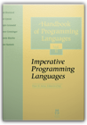
Peter Salus, Peter H. Salus
This handbook covers imperative programming languages. There are chapters on FORTRAN, C, Turbo Pascal and Icon. For each language, information on history, syntax, variables, tips and traps is provided.
Programming Languages: Concepts and Constructs
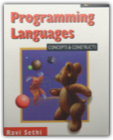
Ravi Sethi
Programming Languages: Concepts and Constructs, Second Edition retains the "character" of the original, emphasizing concepts and how they work together. This classic book has been thoroughly revised to provide readable coverage of the major programming paradigms. Dr. Sethi's treatment of the core concepts of imperative programming in languages like Pascal and C flows smoothly into object-oriented programming in C++ and Smalltalk. The charm of functional languages is illustrated by programs in standard ML and the Scheme dialect of Lisp. Logic programming is introduced using Prolog. Novices, who have been introduced to programming in some language, will learn from this book how related concepts work together while designers and implementers willp be exposed to the major programming paradigms. Example programs from the book are available as source code. These are available by anonymous ftp at ftp://ftp.aw.com/cseng/authors/sethi/pl2e. 0201590654B04062001
Operating System Concepts, 5th Edition
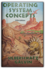
Abraham Silberschatz, Bill Zorbrist, Peter Galvin
This textbook provides coverage of the fundamental concepts which make up the foundation of operating systems and also gives practical experience with a fully functioning instructional operating system called NACHOS. This edition also features new chapters on the history of the operating systems and on computer ethics, as well as a further case study on WindowsNT. Memory management, including modern computer architectures and file system design and implementation are also covered. Common operating systems (MS-DOS, OS/2, Sun OS5 and Macintosh) are used throughout to illustrate concepts and provide examples of performance characteristics.
Principles of Instrumental Analysis, 5th Edition
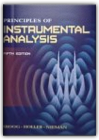
Douglas A. Skoog, F. James Holler, Timothy A. Nieman
This text is written for a course that deals with the principles and applications of modern analytical instruments. Emphasis is placed upon the theoretical basis of each type of instrument, its optimal area of application, its sensitivity, its precision, and its limitations. The text also introduces students to elementary integrated circuitry, microprocessors and computers, and treatment of analytical data.
Advanced Programming in the UNIX
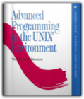
W. Richard Stevens
Bestselling UNIX author W. Richard Stevens offers application developers and system programmers his professional, experience-based guidance on using the system call interface with C. In the first half of the book, Stevens describes more than 200 system calls and functions with a brief example program following each description. Having provided the basics, Stevens moves on to chapter-long examples. The book is applicable to all major UNIX releases, especially System V Release 4-including Solaris 2-and 4.4 BSD, including 386 BSD.
The C++ Programming Language: Special Edition
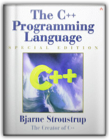
Bjarne Stroustrup
More than three-quarters of a million programmers have benefited from this book in all of its editionsWritten by Bjarne Stroustrup, the creator of C++, this is the world's most trusted and widely read book on C++. For this special hardcover edition, two new appendixes on locales and standard library exception safety (also available at www.research.att.com/~bs/) have been added. The result is complete, authoritative coverage of the C++ language, its standard library, and key design techniques. Based on the ANSI/ISO C++ standard, The C++ Programming Language provides current and comprehensive coverage of all C++ language features and standard library components. For example:abstract classes as interfacesclass hierarchies for object-oriented programmingtemplates as the basis for type-safe generic softwareexceptions for regular error handlingnamespaces for modularity in large-scale softwarerun-time type identification for loosely coupled systemsthe C subset of C++ for C compatibility and system-level workstandard containers and algorithmsstandard strings, I/O streams, and numericsC compatibility, internationalization, and exception safetyBjarne Stroustrup makes C++ even more accessible to those new to the language, while adding advanced information and techniques that even expert C++ programmers will find invaluable. Component Software: Beyond Object-Oriented Programming
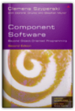
Clemens Szyperski
The author describes his book as a "unique blend of market and technology coverage, broad and fair coverage of current technologies and a deep discussion of real problems with their solutions where known". The first edition won the "Jolt Award" became the leading book on the market to combine explanations of what the key technologies are, how to use them and why they are important in the software market-place, and look at these in terms of both the technical and business issues. The book was also the first to define components and clarify the key questions surrounding them, show how they are key to software design and offer a historical overview of their development.
Computer Networks
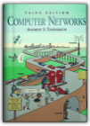
Andrew S. Tanenbaum
New edition of the classic best-seller. Takes a structured approach to networking, starting at the bottom and gradually working up to the top. DLC: Computer networks.
|


My Library
Collection Total:
545 Items
545 Items
Last Updated:
Apr 7, 2013
Apr 7, 2013
 Made with Delicious Library
Made with Delicious Library